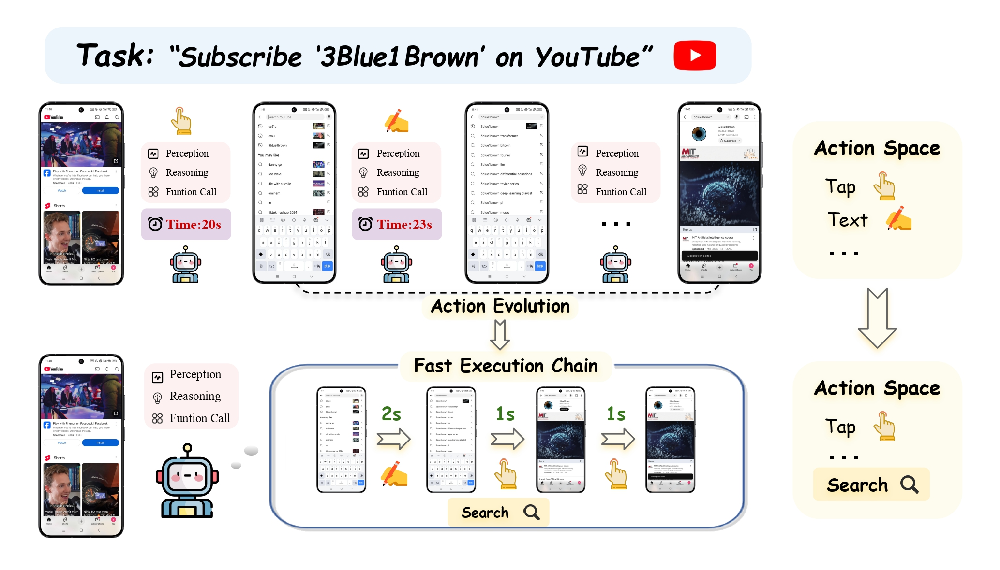

Projects

LangGraph ChatBot
- Context: Explore multi-agent coordination for conversational AI.
- Actions: Built a graph-based chatbot orchestrating LLM agents with LangGraph for tool use and role handoffs.
- Impact: Demonstrated a scalable pattern for multi-agent dialogues and reasoning.

LLM-Based Android Agent
- Context: Automate mobile UI tasks from natural language goals.
- Actions: Engineered a custom LLM agent with few-shot prompting, memory buffers, and self-reflection to interpret layouts and goals.
- Impact: Achieved 80%+ step accuracy across 10+ simulated apps and improved goal success rate by ~25%.

Proxy TuNER
- Context: Improve cross-domain NER without large compute budgets.
- Actions: Developed proxy-tuning for BERT using logit ensembling and gradient reversal layers.
- Impact: Raised average F1 by 8%, cut computation 70%, and sped inference 30%.

IntelliMeet
- Context: Create a secure, decentralized video conferencing platform.
- Actions: Built federated, encrypted system with on-device RetinaFace attention tracking and Transformer-based speech-to-text.
- Impact: Delivered sub-200ms latency, boosted meeting engagement 25%, and maintained 99.9% uptime.

DNA Sequence Classifier
- Context: Classify genomic sequences accurately with limited compute.
- Actions: Fine-tuned DNABERT and HyenaDNA with LoRA and soft prompting; automated preprocessing for 1M+ sequences via Biopython and Airflow.
- Impact: Reached 94%+ accuracy and cut preprocessing runtime by 40%.

PulseMap Agent
- Context: Community safety data scattered across official feeds and user reports.
- Actions: Built PulseMap, fusing USGS, NWS, EONET and FIRMS feeds with AI-classified community reports.
- Impact: Unified alerts into one map and improved time-to-visibility for local incidents.